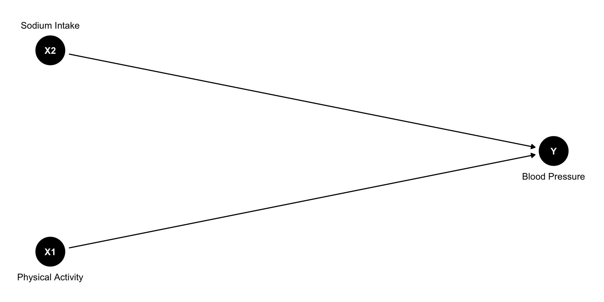
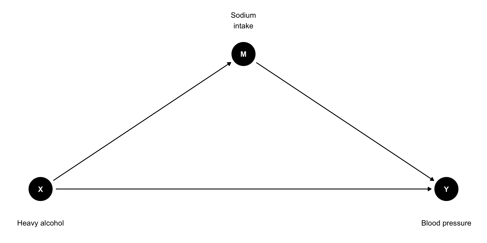
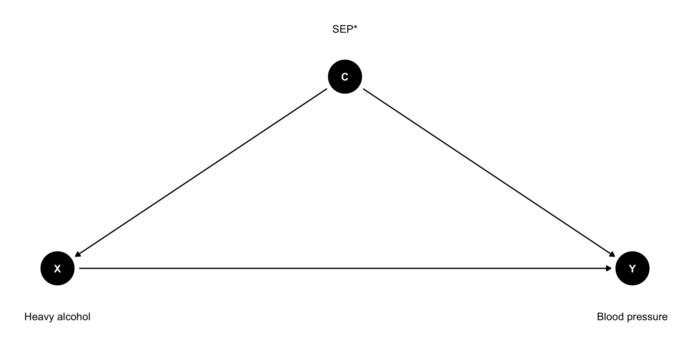
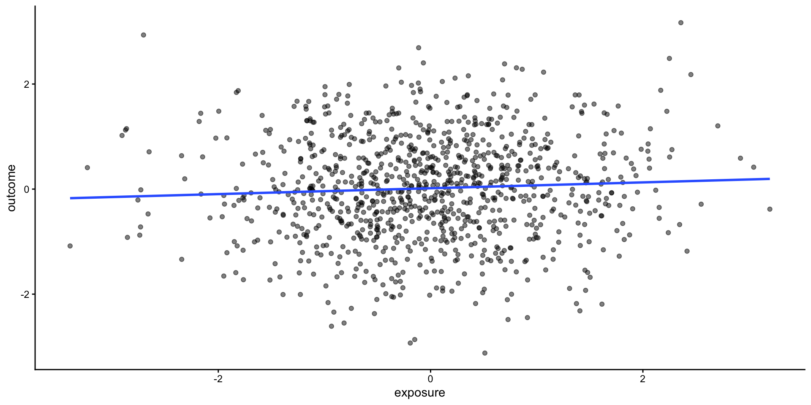
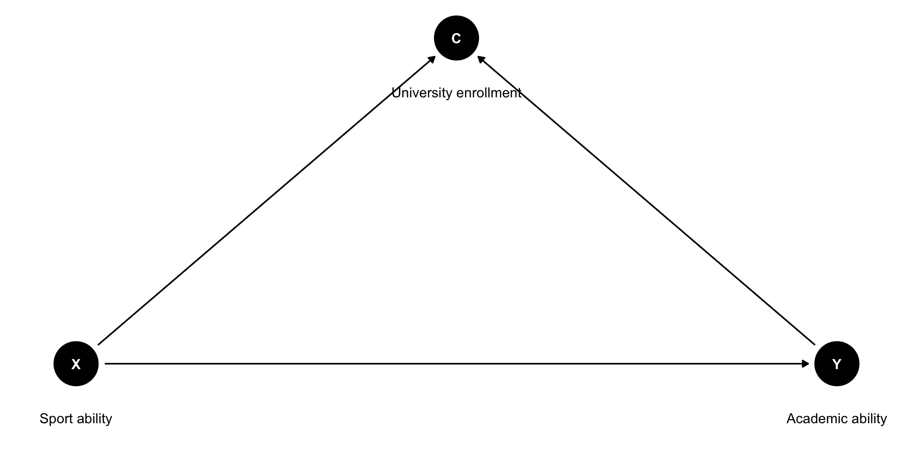

rownames | seqn | qsmk | death | yrdth | modth | dadth | sbp | dbp | sex | age | race | income | marital | school | education | ht | wt71 | wt82 | wt82_71 | birthplace | smokeintensity | smkintensity82_71 | smokeyrs | asthma | bronch | tb | hf | hbp | pepticulcer | colitis | hepatitis | chroniccough | hayfever | diabetes | polio | tumor | nervousbreak | alcoholpy | alcoholfreq | alcoholtype | alcoholhowmuch | pica | headache | otherpain | weakheart | allergies | nerves | lackpep | hbpmed | boweltrouble | wtloss | infection | active | exercise | birthcontrol | pregnancies | cholesterol | hightax82 | price71 | price82 | tax71 | tax82 | price71_82 | tax71_82 | id | censored | older |
|---|---|---|---|---|---|---|---|---|---|---|---|---|---|---|---|---|---|---|---|---|---|---|---|---|---|---|---|---|---|---|---|---|---|---|---|---|---|---|---|---|---|---|---|---|---|---|---|---|---|---|---|---|---|---|---|---|---|---|---|---|---|---|---|---|---|---|---|
1 | 233 | 0 | 0 | 175 | 96 | 0 | 42 | 1 | 19 | 2 | 7 | 1 | 174.1875 | 79.04 | 68.94604 | -10.093960 | 47 | 30 | -10 | 29 | 0 | 0 | 0 | 0 | 1 | 1 | 0 | 0 | 0 | 0 | 1 | 0 | 0 | 0 | 1 | 1 | 3 | 7 | 0 | 1 | 0 | 0 | 0 | 0 | 0 | 1 | 0 | 0 | 0 | 0 | 2 | 2 | 197 | 0 | 2.183594 | 1.739990 | 1.1022949 | 0.4619751 | 0.44378662 | 0.6403809 | 1 | 0 | 0 | ||||
2 | 235 | 0 | 0 | 123 | 80 | 0 | 36 | 0 | 18 | 2 | 9 | 2 | 159.3750 | 58.63 | 61.23497 | 2.604970 | 42 | 20 | -10 | 24 | 0 | 0 | 0 | 0 | 0 | 0 | 0 | 0 | 0 | 0 | 0 | 0 | 0 | 0 | 1 | 0 | 1 | 4 | 0 | 1 | 0 | 0 | 0 | 0 | 0 | 0 | 0 | 0 | 1 | 0 | 0 | 2 | 301 | 0 | 2.346680 | 1.797363 | 1.3649902 | 0.5718994 | 0.54931641 | 0.7929688 | 2 | 0 | 0 | ||||
3 | 244 | 0 | 0 | 115 | 75 | 1 | 56 | 1 | 15 | 3 | 11 | 2 | 168.5000 | 56.81 | 66.22449 | 9.414486 | 51 | 20 | -14 | 26 | 0 | 0 | 0 | 0 | 0 | 0 | 0 | 0 | 0 | 1 | 0 | 0 | 1 | 0 | 1 | 3 | 4 | 0 | 1 | 1 | 0 | 0 | 1 | 0 | 0 | 0 | 0 | 0 | 0 | 2 | 0 | 2 | 157 | 0 | 1.569580 | 1.513428 | 0.5512695 | 0.2309875 | 0.05619812 | 0.3202515 | 3 | 0 | 1 | ||||
4 | 245 | 0 | 1 | 85 | 2 | 14 | 148 | 78 | 0 | 68 | 1 | 15 | 3 | 5 | 1 | 170.1875 | 59.42 | 64.41012 | 4.990117 | 37 | 3 | 4 | 53 | 0 | 0 | 0 | 0 | 1 | 0 | 0 | 0 | 0 | 0 | 0 | 0 | 0 | 0 | 1 | 2 | 3 | 4 | 0 | 0 | 1 | 1 | 0 | 0 | 0 | 0 | 0 | 0 | 0 | 1 | 2 | 2 | 174 | 0 | 1.506592 | 1.451904 | 0.5249023 | 0.2199707 | 0.05479431 | 0.3049927 | 4 | 0 | 1 | |
5 | 252 | 0 | 0 | 118 | 77 | 0 | 40 | 0 | 18 | 2 | 11 | 2 | 181.8750 | 87.09 | 92.07925 | 4.989251 | 42 | 20 | 0 | 19 | 0 | 0 | 0 | 0 | 0 | 0 | 0 | 0 | 0 | 0 | 0 | 0 | 0 | 0 | 1 | 2 | 1 | 2 | 0 | 1 | 0 | 0 | 0 | 0 | 0 | 0 | 1 | 0 | 0 | 1 | 1 | 2 | 216 | 0 | 2.346680 | 1.797363 | 1.3649902 | 0.5718994 | 0.54931641 | 0.7929688 | 5 | 0 | 0 |
Multiple Regression I: Variable Selection
Behavioral Research Methods 2
Eindhoven University of Technology
2026-10-02
Lecture materials
Slides and exercises available are available here:
Lecture’s objectives
By the end of this lecture, you should be able to:
Identify the type of research question (causal, associational or prediction)
Identify the type of variables (predictors, mediators, confounders and colliders)
Be familiar with Directed Acyclical Graphs (DAGs)
Know how to use DAGs to identify potential confounders and avoid inappropriate adjustment for bad controls
The difficulty
Suppose we work for the Ministry of Health
Our goal is to investigate what factors affect blood pressure (
sbp)The
nhefsdataset contains survey data from US populationWhich factors affect systolic blood pressure (
sbp)?
What variables to include in the model?
Not based on whether p < 0.05!
Selecting variables based solely on statistical significance is a mindless approach and should be avoided
It can increase the number of false positives (Type I error rate)
The answer is that it depends on your research question
Types of research questions
Causal questions
Aims to answer a well-defined, pre-specified question: “Does heavy sodium intake increase blood pressure?”
Focus on estimating the causal effect of an an intervention/exposure on an outcome
Variables should be selected based on causal assumptions, theory, and prior evidence
Causal questions
Causal questions can be studied using randomised controlled trials (RCTs) or observational studies
RCTs are generally preferred for establishing causal effects but they can be costly or unethical (e.g., randomly assigning people to smoke to study its effect on lung cancer)
Observational studies can also support causal inference, but confounding needs to be addressed
Regression analysis can be used to adjust for measured confounders by including them as covariates in the model
A side note on observational studies
Observational studies are based on data collected without any intervention or manipulation by the researcher
Observational studies involve collecting data from:
- Medical records, surveys, registries, etc.
- Observing participants in their natural environment
Observational studies can be:
Prospective (data collected going forward in time)
Retrospective (data collected going backwards in time)
Exploratory / associational questions
Does not have a specific pre-specified hypothesis
Research questions often use wording such as:“What factors are associated with mortality?”
Examines multiple variables to identify potential associations
Based on observational studies so there is risk of confounding
Prediction questions
Asks: “How accurately can we predict blood pressure in the sedentary population?”
Uses observed data to make predictions about an outcome
Focuses on prediction accuracy, rather than estimating causal effects
The best model is the one that generalizes well to new, unseen data
Directed Acyclic Graph (DAG)
DAGs consist of variables (nodes) and arrows (edges)
Nodes can represent interventions, exposures, outcomes, or other characteristics
Arrows represent known or hypothesised causal relationships between variables
Directed Acyclic Graph (DAG)
DAGs depict an investigator’s hypotheses or assumptions about:
how variables are causally related
how an intervention/exposure affects an outcome
which variables should be adjusted for (in other words, DAGs can inform statistical analysis)
Types of variables
When deciding which variables to include in a regression model, it is important to distinguish between:
Predictors
Mediators
Confounders
Colliders
Predictors
A predictor (\(X\)) is a variable included in the model to explain the outcome (\(Y\))
Predictors can be:
- Exposures/interventions (e.g., diet, exercise, medication, etc.)
- Covariates: other characteristics that may influence the outcome (e.g., age, sex, socio-economic position, etc.)
Predictors in a DAG

The question
Instead of sking:
“Do people who exercise more have lower blood pressure?”
With a covariate, we ask:
“Is exercise associated with blood pressure after accounting for differences in sodium intake?”
Simulated example of predictors
sodium_intake | exercise | blood_pressure |
|---|---|---|
7.59 | 4.46 | 3.33 |
10.55 | 5.09 | 9.01 |
12.17 | 3.56 | 11.86 |
5.31 | 5.10 | 0.94 |
10.86 | 3.94 | 12.42 |
11.01 | 5.28 | 9.49 |
8.85 | 8.53 | 5.74 |
8.91 | 6.34 | 1.77 |
Regression model without covariate
term | estimate | std.error | p.value |
|---|---|---|---|
(Intercept) | 16.23 | 0.37 | 0.00 |
exercise | -1.57 | 0.08 | 0.00 |
The simulated true causal effect of exercise on blood pressure is -1.7
The estimated effect of exercise on blood pressure is -1.57, which is biased because its does not accurately reflect the true causal effect of exercise
Regression model with covariate
term | estimate | std.error | p.value |
|---|---|---|---|
(Intercept) | 7.51 | 1.09 | 0.00 |
exercise | -1.64 | 0.07 | 0.00 |
sodium_intake | 0.90 | 0.11 | 0.00 |
The estimated effect of exercise on blood pressure is -1.64, which is more accurate and closer to the true causal effect of -1.7
Interpreting the predictors
Sodium intake: Holding
exerciseconstant, a one-unit increase in sodium is associated with a -1.64-unit decrease in blood pressure*
Exercise: Holding
sodium_intakeconstant, a one-unit increase inexerciseis associated with a 0.9-unit increase in blood pressure
Including a covariate increases precision
Model with covariate
term | estimate | std.error | p.value |
|---|---|---|---|
(Intercept) | 7.51 | 1.09 | 0.00 |
exercise | -1.64 | 0.07 | 0.00 |
sodium_intake | 0.90 | 0.11 | 0.00 |
Model without covariate
term | estimate | std.error | p.value |
|---|---|---|---|
(Intercept) | 16.23 | 0.37 | 0.00 |
exercise | -1.57 | 0.08 | 0.00 |
Why to include a covariate?
- Control for differences in the covariate that can contribute to the observed association
- Increase the statistical precision of the estimated effect of exposure (i.e., smaller standard error and more precise CI) and increase statistical power
Mediator
A mediator is a variable that:
is influenced by the exposure (\(X\))
influences the outcome (\(Y\))
lies on the causal pathway between \(X\) and \(Y\)
adjusting for it removes the mediated effect from the estimated effect of \(X\)
Mediator in a DAG

Direct, Indirect and Total Effects
Direct effect
- The effect of \(X\) on \(Y\) not through \(M\) : \(X\) → Y
Indirect effect
- The effect of \(X\) on \(Y\) through \(M\): \(X\) → \(M\) → \(Y\)
Total effect
The overall effect of \(X\) on \(Y\), combining the direct and indirect effects:
- Total effect = Direct effect + Indirect effect
Simulated example of a mediator
exposure | mediator | outcome |
|---|---|---|
-1.21 | -0.24 | -2.00 |
0.28 | 0.86 | 0.78 |
1.08 | 0.84 | 0.71 |
-2.35 | -0.71 | -2.57 |
0.43 | 0.57 | 1.03 |
0.51 | 1.06 | 1.15 |
-0.57 | 1.50 | 2.22 |
-0.55 | 0.78 | -0.85 |
Without adjusting for the mediator
term | estimate | p.value |
|---|---|---|
(Intercept) | -0.03 | 0.76 |
exposure | 0.94 | 0.00 |
This model estimates the total effect of the exposure.
The total effect is the effect of interest when estimating the overall effect of an exposure or intervention.
Adjusting for the mediator
term | estimate | p.value |
|---|---|---|
(Intercept) | -0.09 | 0.23 |
exposure | 0.40 | 0.00 |
mediator | 0.76 | 0.00 |
Exposure corresponds to the direct effect (i.e., the effect of \(X\) on \(Y\) not through M).
Adjusting for the mediator blocks the pathway \(X\) → \(M\) → \(Y\), so the model no longer estimates the total effect of \(X\) on \(Y\)
Confounder
A confounder is a variable that:
- is associated with the exposure (\(X\))
- is associated with the outcome (\(Y\))
- is not a consequence of the exposure
- can lead to biased estimates if not adjusted for
Confounder in a DAG

*SEP = socio-economic position
Confounding in practice
confounder | exposure | outcome |
|---|---|---|
1 | 0.34 | 2.42 |
1 | 0.87 | 2.68 |
1 | 0.58 | 2.54 |
1 | 0.50 | 2.50 |
0 | 0.13 | 2.07 |
1 | 0.63 | 2.56 |
0 | 0.16 | 2.08 |
0 | 0.13 | 2.06 |
Without adjusting for the confounder
term | estimate | p.value |
|---|---|---|
(Intercept) | 2.04 | 0.00 |
exposure | 0.65 | 0.00 |
The simulated true causal effect is 0.5.
Without adjusting for the confounder, the estimated effect of exposure is 0.65, which represents a biased estimate of the true causal effect
Adjusting for the confounder
term | estimate | p.value |
|---|---|---|
(Intercept) | 2.00 | 0.00 |
exposure | 0.50 | 0.00 |
confounder | 0.25 | 0.00 |
Adjusting for the confounder results in an estimate of 0.5 which is an unbiased estimate of the true effect of the exposure (0.5)
Collider
A collider is a variable that:
is caused by the exposure (\(X\))
is caused by the outcome (\(Y\))
is therefore a common consequence of both the exposure and the outcome
Collider bias can arise through:
- Study design: sampling, stratification or matching
- Statistical analysis: adjusting for the collider in a regression model
Collider in a DAG

*CVD = Cardiovascular disease
Simulated example of collider bias
exposure | outcome | collider |
|---|---|---|
-1.21 | -1.21 | -2.90 |
0.28 | 0.30 | 0.53 |
1.08 | -1.54 | -0.51 |
-2.35 | 0.64 | -1.11 |
0.43 | 0.70 | 0.30 |
0.51 | -1.91 | -1.92 |
-0.57 | 0.94 | -0.51 |
-0.55 | -0.22 | -0.51 |
No conditioning on a collider
Exposure and outcome were simulated independently
Therefore, there is no true association between them

Without adjusting for the collider
term | estimate | p.value |
|---|---|---|
(Intercept) | 0.02 | 0.61 |
exposure | 0.06 | 0.07 |
No causal association between exposure and outcome
Conditioning on a collider through sampling

Adjusting for the collider
term | estimate | p.value |
|---|---|---|
(Intercept) | -0.01 | 0.56 |
exposure | -0.79 | 0.00 |
collider | 0.80 | 0.00 |
Adjusting for the collider creates a spurious association between exposure and outcome
An example: The Obesity Paradox
The higher the body mass index, the higher the mortality risk
Cardiovascular disease (CVD) can act as a collider
Conditioning on CVD (e.g., by stratifying on disease status or by adjusting on multiple regression) create the obesity paradox
Obesity paradox: among people with CVD, obesity appear to be associated with lower mortality
The Obesity Paradox
| Analysis | Risk Difference (95% CI) |
|---|---|
| mortality ~ obesity + confounders | 0.05 (0.03, 0.07) |
| Adjusted — total population | 0.03 (0.02, 0.05) |
| mortality ~ obesity + CVD + confounders | −0.12 (−0.20, −0.04) |
| Adjusted — No CVD | 0.03 (0.01, 0.05) |
Another example of collider bias

Conditioning on a collider through sampling

Conditioning on university enrollment creates a spurious association between sports ability and academic ability
Examples of bad controls in applied research
Risk factors of COVID-19 (Griffith et al. 2020)
The birth-weight paradox (Hernández-Dı́az et al. 2006)
Multigenerational mobility (Breen 2018)
Recipe for an appropriate analysis
Tip
Start with the research question — what effect or association are you trying to estimate?
Adjust for relevant good controls (i.e., covariates and confounders)
Avoid bad controls:
Do not adjust for mediators that lie on the causal pathway to estimate the total effect of an intervention
Do not condition on colliders either through sampling/selection or regression adjustment
Further reading and references
Further reading includes Digitale et al. (2022) and Lewer et al. (2025)